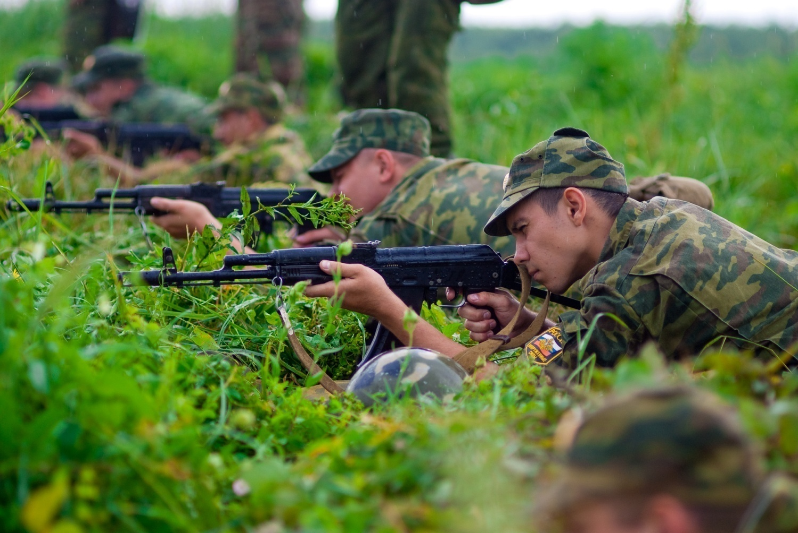
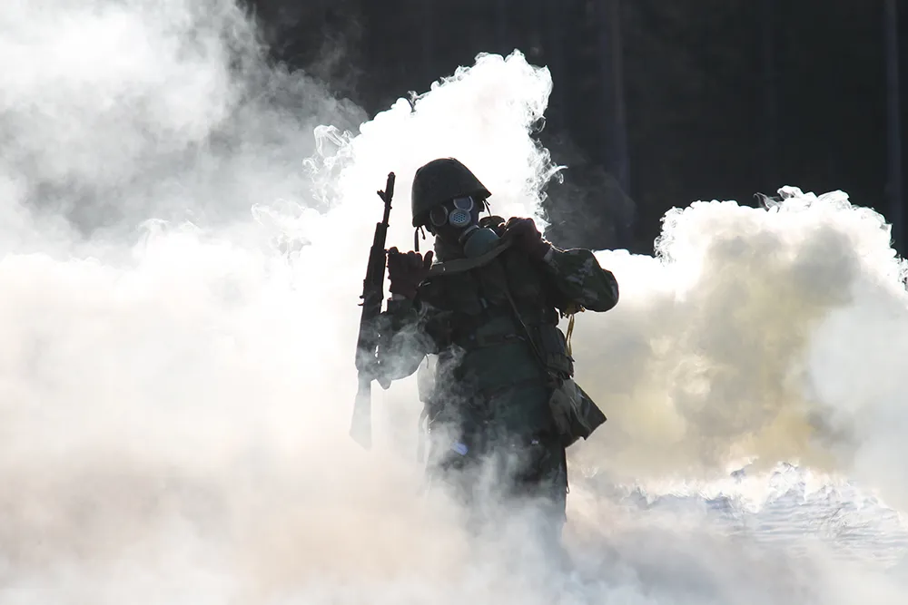
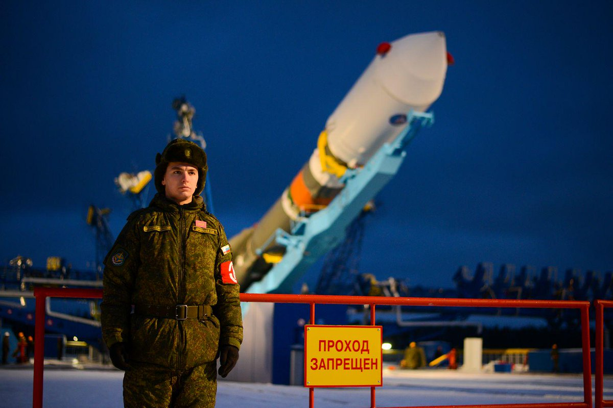
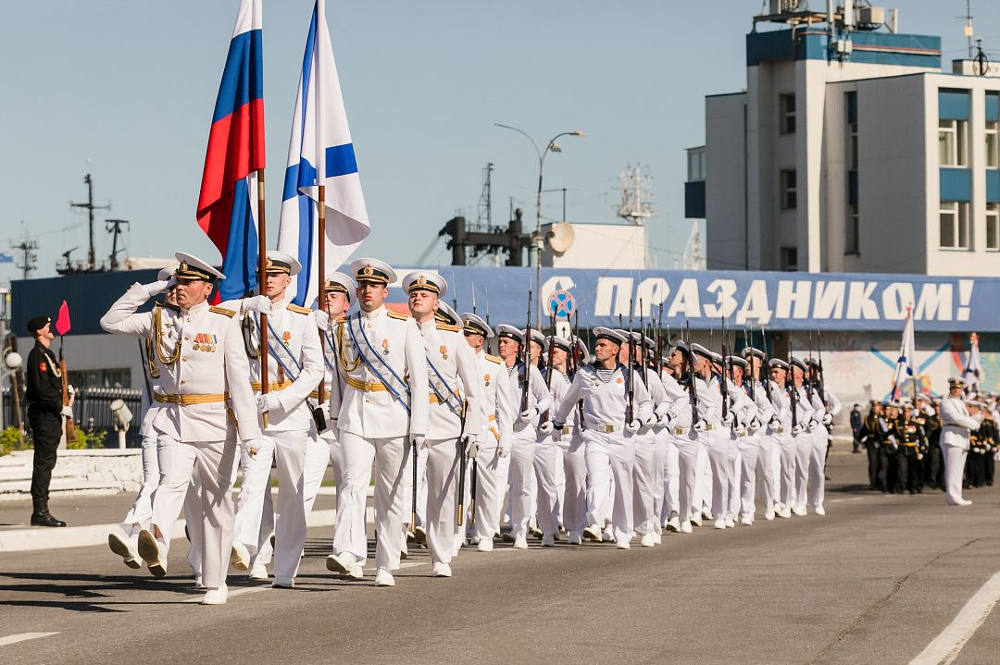

Армия, или, как ее еще называют, вооруженные силы — это государственная организация, которая нужна, чтобы отразить внешнее вооруженное нападение на Россию, если это вдруг случится.На практике соседние государства не часто пытаются отобрать себе часть чужой территории или проявляют какую-то агрессию. Поэтому в реальной жизни армии воюют очень редко. Однако закон позволяет использовать военных и для других задач, в том числе и тех, которые напрямую не связаны с обороной — например, военная авиация помогает МЧС тушить лесные пожары, а медики разворачивают госпитали, борясь с пандемией.
Военную службу проходят не только в Министерстве обороны — воинские звания присваивают в ФСБ, ФСО, Росгвардии и других силовых ведомствах. Структура и род деятельности в этих ведомствах отличается от Вооруженных сил. Но есть много общего — все эти люди обязаны работать в интересах государства, а их деятельность регламентируют приказы и уставы.
Армия в первую очередь нужна для защиты от агрессии извне. Но поддерживать всю эту многомиллионную структуру в рабочем состоянии нужно постоянно, чтобы она всегда была готова к применению
Армию можно сравнить с газовым баллончиком, который лежит в сумке у девушки годами, и применять его нет повода. Но когда он есть — владелица чувствует себя увереннее. А еще для того, чтобы пользоваться баллончиком, нужны постоянные тренировки. Кроме того, когда срок годности у баллончика заканчивается — его нужно заменить, иначе он не сработает как надо.Так же и с армией. Чтобы поддерживать войска в постоянной готовности, надо постоянно проводить боевую подготовку, то есть как бы тренироваться перед возможной войной. О нападении противник заранее не объявит, поэтому готовым нужно быть всегда. Во время такой подготовки военные и проводят стрельбы, прыгают с парашютом, выводят в море корабли и так далее. Так они отрабатывают на практике действия, которые пригодятся в случае войны. Есть и более масштабные мероприятия — например, учения и маневры.
Вооруженные силы состоят из видов и родов войск. Видов войск три.
Cухопутные — предназначены, чтобы вести боевые действия на суше. Это самый большой по структуре и численности вид войск. В него входят мотострелковые, танковые, ракетные войска и артиллерия, а также ПВО. Кроме этого, к сухопутным войскам относятся специальные рода войск: связи, радиоэлектронной борьбы, инженерные, радиационной, химической и биологической защиты, разведывательные подразделения. Части и подразделения этих родов бывают не только в сухопутных войсках. Например, воздушно-десантные войска — это отдельный род войск. Основные подразделения здесь это парашютно-десантные и десантно-штурмовые, но их действия прикрывают свои подразделения ПВО, связь обеспечивают свои связисты, а разведку ведут свои разведчики.
Воздушно-космические силы, или ВКС — нужны для ведения боевых действий в воздухе и обеспечения безопасности воздушного и космического пространства страны. Сюда входят военно-воздушные силы и войска космической обороны.
Военно-морской флот, или ВМФ — предназначен для ведения боевых действий в морях и океанах. В состав ВМФ входят надводные силы, подводные силы, морская авиация и береговые войска. Береговые войска — это морская пехота и береговая артиллерия.
Кроме этого есть еще два самостоятельных рода войск, которые не входят ни в один из видов, описанных выше:
Воздушно-десантные войска. Они предназначены для десантирования по воздуху и ведения боевых действий в тылу противника. Ракетные войска стратегического назначения. Они предназначены прежде всего для сдерживания агрессии других государств — для того, чтобы страны, обладающие ядерным оружием, понимали, что в случае его использования против России получат в ответ такой же ядерный удар. Этот род войск на практике ни разу не использовали, и, надеюсь, использоваться будет только на учениях.